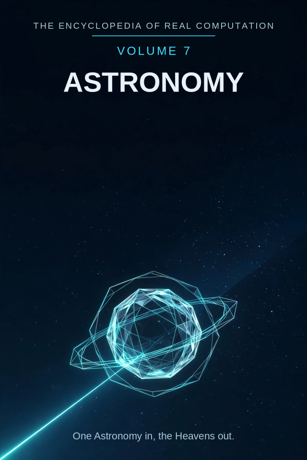

Chron.
The Encyclopedia of Real Computation

One Astronomy in, the Heavens out.
Home domain: Physics
One Astronomy in, the Heavens out.
◉ A Principle .... Astronomy ◎ B Purpose ...... Charting ◉·◉ A.A Alpha ...... the Astronomer ◉·◎ A.B Cross ...... the Telescope △ X Primitive .... Starlight ⚙ Y Protocol ..... Observation ⬢ Z Product ...... the Orbit ◐ i State ........ the Dark ⚖ j Condition .... the Clear Sky ⊞ N Set .......... the Bodies ◷ h Time ......... the Night ▣ C Context ...... the Observatory ▦ D Domain ....... the Sky ♥ E Emotion ...... Vastness ➤ F Intention .... Navigation ↻ pi Cycle ........ the Period ➔ phi Step ......... the Transit ⚄ e Probability .. the Measure • h-bar Planck ..... the Photon
Σ sigma Summation .. the Cosmos
◈ gamma Scale ...... the Ladder Δ delta Change ..... the Redshift ⁂ sigma' Options ... the Worlds Ω Omega Answer ..... the Heavens
Every volume of this encyclopedia does the same work. The Prologue figures the subject whole. Then come twenty-four chapters, one per term, each doing four jobs in plain English: what the term means, where it sits in the computation, how it works on the volume's one running example, and what breaks without it. Then the Data, whole. Then the Crossings. Then the Sum. The running example of this volume is one planet - Mars - followed night by night for a whole season, from its first evening rising to the far side of its loop.
Astronomy: the study of the heavens - the bodies above the Earth, their motions, their distances, their natures - carried out by watching the light they send. Charting: the making of a map of positions and paths that a stranger can sail, fly, or point by.
◉ Astronomy. ◎ Charting = the root of Astronomy: aimed at itself,
the watching field asks where everything up there is, and where it is going. ◉·◉ the Astronomer: astronomy turned on itself becomes a person who watches. ◉·◎ the Telescope: astronomy crossed with charting - the instrument that carries the crossing, gathering light no eye could gather alone. △ Starlight = Astronomy parted over the Bodies. ⚙ Observation = the function of the Starlight, the watching applied, night after night.
⬢ the Orbit = Starlight times Observation, the product: a path
drawn from points of light. ◐ the Dark = the root of negative Astronomy: everything the light has not reached or cannot say.
⚖ the Clear Sky = the condition, element by element: astronomy
stands while the sky is clear and the record is honest.
⊞ the Bodies = the set: Star, Planet, Moon, Comet, Nebula,
Galaxy. ◷ the Night: astronomy comes down through the dark hours. ▣ the Observatory: where astronomy stands. ▦ the Sky = the Bodies crossed by the Study. ♥ Vastness = the difference a landing makes. ➤ Navigation = the intention that carries a context. ↻ the Period: every body returns, and the return is timed. ➔ the Transit: one crossing, watched, one step of the chart. ⚄ the Measure: the odds a position carries - a chart is a claim with its error printed. • the Photon: the least piece, one particle of the light itself. Σ the Cosmos: all of it, summed as one. ◈ the Ladder: the scale of distances, rung on rung. Δ the Redshift: the heavens' own measure of change, light stretched by motion and depth. ⁂ the Worlds: the spread of places claimed, suspected, or imagined beyond our own. Ω the Heavens: the answer astronomy resolves into - the whole sky, known as one thing.
IF If Astronomy to Charting, then Starlight & Observation is the Orbit, or the Dark while the Clear Sky for the Bodies, through the Night, in the Observatory, the Sky, Vastness, Navigation, at the Period by the Transit, with the Measure over the Photon - sum the Cosmos, scale the Ladder, change the Redshift, options the Worlds - therefore the Heavens.
Stands below, after the chapters, figured whole: the Bodies crossed by the Study, twenty-four cells, and the six contexts.
The seven laws, run on this seed. Pythagoras: Astronomy squared plus Charting squared overlays the Observatory squared - every distance in this volume is a triangle closed honestly, in the Where, the If, and the Data identically. Law of cosines: the tilt between watching and charting is set by context - at the eyepiece the angle is patience, in the catalogue it is pure geometry. Binomial: the middle term is the Telescope, two times over - the watcher shapes the instrument, the instrument reshapes what can be watched. AM-GM: Charting is the geometric mean between Astronomy and the One. Log law: the Ladder of the Orbit is the Ladder of the Starlight plus the Ladder of the Observation - reach adds where watching multiplies. Complex modulus: the Dark is counted in the size of the field; astronomy is larger, not smaller, for mapping its shadow. Triangle inequality: no route from Starlight to Orbit is shorter than Observation; skip the watching and you hold a guess, labelled as such among the Worlds.
Astronomy begins with the oldest data there is: light, arriving unasked, from everything above the Earth. Its work is to watch that light patiently and turn sightings into charts - positions, periods, paths - that other people can steer by. Its product is the orbit: a whole journey drawn from a handful of bright points, strong enough to say where a planet will stand on a night nobody has lived yet. The field is honest about its one great weakness - it cannot touch its objects; everything it knows rides on light, and it prints the measure of its errors beside its claims. And its finish is the heavens themselves, no longer a scatter of lights but one ordered whole: bodies, distances, and motions held in a single map that any watcher, anywhere, can check against the sky. One Astronomy in, the Heavens out.
What it means. Astronomy is the study of everything beyond the Earth's air: what the bodies are, where they stand, how they move. It is the oldest science and the most dependent - it owns nothing it studies, and borrows all its evidence from light.
Where it sits. Astronomy is the Principle of this volume, the seed every other term grows from: Charting is its root, the Astronomer its self-product, the Telescope its cross.
How it works. This volume follows one planet, Mars, for a whole season: rising earlier each week, brightening, halting, looping backward against the stars, then recovering its road. Everything in the volume is astronomy explaining that one red wanderer completely.
What breaks without it. Every calendar, every voyage steered by stars, every clock set by the turning sky leans on this field's charts. Remove the Principle and the heavens go back to being weather for omens.
What it means. Charting is the making of the map: turning sightings into positions and paths that hold still on paper while the sky moves. A chart is a promise - look here, at this hour, and this is what you will find.
Where it sits. Charting is the Purpose, B = the square root of A: astronomy aimed at itself extracts the demand to place things, not just admire them. And B squared = A: a sky fully charted settles back into astronomy itself.
How it works. Mars is charted one dot at a time: tonight's position against the fixed stars, tomorrow's, next week's. The dots refuse a straight line - they loop. The chart's job is not to tidy the loop away but to draw it truly, until the loop itself becomes the clue that explains it.
What breaks without it. Uncharted watching is stargazing: beautiful, private, and unusable by anyone else. Charting is what turns one person's season of nights into everyone's map.
What it means. The astronomer is astronomy embodied: patience trained into a person - the habits of recording exactly, of distrusting a single sighting, of waiting a year for a second look and calling that speed.
Where it sits. The Alpha, A times A: the field turned on itself. The same sky held by a passer-by and by an astronomer differs in the company it keeps: past seasons, near-misses, the memory of Mars' last visit two years ago.
How it works. Anyone can see Mars brighten. The astronomer notices it brightens as it loops, asks what brightening-plus- looping means about its road and ours, and already knows which nights this season must not be missed. The holder is the difference.
What breaks without it. Charts without astronomers are paper that stops: nobody extends them, nobody catches their errors, nobody is watching when the sky does something new.
What it means. The telescope is the interaction term: astronomy crossed with charting, made of glass. It is where the watching meets the map - gathering more light than an eye holds, holding a body steady in view long enough to be placed on the chart.
Where it sits. The Cross, A times B, counted twice: the field shapes the instrument (each generation builds the glass its questions need), and the instrument reshapes the field (each new glass has handed astronomy new heavens - moons, rings, galaxies).
How it works. To the naked eye Mars is a bright reddish point. Through the telescope it is a small disc with a pale cap and dark markings that shift with its seasons. The season of dots becomes a world with weather - because the cross was strong enough to carry it.
What breaks without it. With either factor at zero - light with no drive to chart it, or charting-drive with no light gathered - the product is zero. Eyes alone kept astronomy at the threshold for thousands of years.
What it means. Starlight is the primitive material: light itself, arriving from every body in the set, the only messenger astronomy has ever had. It carries position, brightness, colour, and - read finely - composition, all in one stream.
Where it sits. X = A times N: the Principle spread across the Set. Each body sends the field its own light - the star its furnace-glow, the planet its reflected share, the galaxy its cities of suns summed into one faint smear.
How it works. Mars sends no light of its own; its ruddy glow is sunlight bounced off rust-red ground. Even that is information: the colour is the surface, confessing itself across the dark, in the primitive material itself.
What breaks without it. No light, no field: astronomy is the one science that would be ended, completely and forever, by the simple failure of its evidence to arrive.
What it means. Observation is what may be done with starlight: point, record, time, compare - the same acts, in the same order, whoever performs them, so that one night's work can be checked against another's years later.
Where it sits. Y = f(X), with f the root of Charting: the working is governed by the purpose - observations are taken because they will become chart-positions, not merely souvenirs of a fine night.
How it works. Mars is observed on a schedule, not on whims: fixed hour, fixed instrument, position measured against the same reference stars. It is the sameness of the protocol that lets the loop in the dots be believed - the sky moved; the method didn't.
What breaks without it. Unprotocolled watching gives evenings, not evidence: a hundred fine memories of Mars and not one path that a stranger could verify.
What it means. An orbit is a path drawn whole: starlight worked by observation and carried across charting until a body's entire journey stands as one figure - an ellipse that predicts every future position on it.
Where it sits. Z = X times Y: the product, area-shaped, and it can always be factored back for audit - which nights, which positions, which chart. A prediction that cannot be factored is a prophecy, and this field does not ship those.
How it works. The season's dots, charted, resolve: Mars runs an ellipse around the Sun, and its famous backward loop is no loop in Mars at all - it is the Earth, on its faster inside road, overtaking. The product explains the puzzle that posed it.
What breaks without it. Sightings that never set into orbits are a diary, not a science. The orbit is where watching becomes inheritance: it outlives the watcher and steers the unborn.
What it means. The dark is astronomy's shadow: the bodies too faint for any glass yet, the far side of everything, the stretches of sky where the light runs out - and, at the deep end, matter that announces itself only by its pull and never by a photon.
Where it sits. i = the root of negative A: the state of the principle itself, counted in the field's size by the modulus law. The shadow is not outside astronomy; mapping it is one of its trades.
How it works. Half of Mars is always dark, and its night side has weather no chart records. Widen the lens: the season's watcher sees one hemisphere of one planet in one system. The dark is most of the subject, and this chapter is its honest census.
What breaks without it. A chart that hid its dark would claim the heavens are fully lit and fully known. They are not, and a field that says so can be trusted about the parts it does light.
What it means. The clear sky is the condition the whole field stands under: air steady and transparent, instruments true, records honest. Astronomy prints its conditions the way other fields print axioms - a cloudy season is not a disgrace, but an unrecorded one is a small fraud.
Where it sits. j, the Condition: the root taken element by element. Each position on the chart stands while its night's conditions stand; a sighting taken through haze is labelled haze, and weighed accordingly.
How it works. Of the season's planned nights with Mars, weather takes its tax - a third, in a kind year. The chart shows no gaps, though: the observer logged the lost nights as lost, and the orbit was drawn only through nights whose conditions were named. That naming is the condition working.
What breaks without it. Unstated conditions are smuggled certainty. A field whose every claim carries its weather can be argued with; one that hides it can only be believed.
What it means. The bodies are astronomy's divisions: the Star, the Planet, the Moon, the Comet, the Nebula, the Galaxy - from a single sun to a city of a hundred billion suns counted as one body. Each is the whole principle read at one scale.
Where it sits. N, the Set - the term everything is counted in: starlight is A times N, the domain is N crossed by the Study, the sum runs over N. The set is complete as this volume defines it and open underneath; new kinds of body are still announced.
How it works. Mars sits in the set as a Planet, and the season's work borrows its neighbours for reference: the Moon's face as the measurer's ruler, the fixed Stars as the chart's grid, a comet one autumn as an uninvited cross-check. The set is a sorting, not a fence.
What breaks without it. Unsorted heavens are a glitter: all bright, none findable, every generation re-discovering the wanderers and naming them new.
What it means. The night is astronomy's medium in time: the field works in the dark hours, in seasons and returns measured in years. Its time is patient time - some of its questions are answered only by watching longer than a lifetime, and handing the watch on.
Where it sits. h, Time: the passage the whole figure moves through. Astronomy's records are its memory: Babylonian eclipse notes still check modern charts, because the field wrote its nights down and the nights kept.
How it works. Mars returns to a good season roughly every two years and two months - its synodic rhythm. This season's chart is one verse of a song sung for centuries: earlier watchers left dots, this season adds dots, the orbit grows surer.
What breaks without it. Astronomy restarted nightly would be weather-watching forever: the loop of Mars seen once is a curiosity; seen across the ages, it is a proof about the roads of worlds.
What it means. The observatory is where astronomy stands: a place chosen for darkness and steadiness, whether it is a hilltop dome, a desert plateau, or a telescope in orbit above the weather altogether.
Where it sits. C, the Context, first of the setting terms: contexts transform the domain (the table stands in the Data), and the difference a context makes is measured by Vastness, the next part's first term.
How it works. The season's Mars was followed from one county hill with a modest glass - and the chart agrees, dot for dot, with the great observatories' charts. That agreement across contexts is the field's quiet boast: the sky is the same sky from every honest standing-place.
What breaks without it. Context-free astronomy is an abstraction: the field is done by embodied watchers under real skies, and its results carry the mark of where they stood.
What it means. The sky is astronomy's whole territory: the bodies crossed by the study - every kind of body in its four movements, from the question it asks to the teaching it hands on. The full table stands in the Data, twenty-four cells, every one figured.
Where it sits. D = N crossed by R: the set by the study. A body becomes territory only when the study moves across it; the domain is a crossing, never a list.
How it works. Read Mars' own row: the Planet asks where it wanders, settles the ellipse, reaches the overtaking insight, and hands on the sailing directions. One row of the territory, walked end to end by a single season's example.
What breaks without it. Bodies without a domain are six solitudes - star-watchers and galaxy-counters re-deriving each other's results in private charts. The domain is the one sky they all agree to share.
What it means. Vastness is the difference a result makes when it lands, at astronomy's scale: the felt size of the subject. A charted distance does not merely inform - it dwarfs. The field does not apologise for this; the dwarfing is data about the human place in the map.
Where it sits. E, Emotion: the difference between contexts, C1 minus C0. Before the chart, the night sky is a ceiling of lights; after it, the ceiling is a depth without a floor - and the size of that change is this term.
How it works. Mars at its closest this season still stands tens of millions of miles off - a disc in the glass, a world unreachable, its light minutes old when it lands on the eye. Everyone who follows the season feels the floor of the room drop. That drop is Vastness, measured.
What breaks without it. A field that could not register the landing would print its distances like bus fares and wonder why no one looks up. Vastness is why the charts are read by people who will never steer by them.
What it means. Navigation is astronomy's intention: the deliberate use of the chart to carry a traveller. Long before it was a science of wonder it was a science of arrival - the star that says north, the season that says sail.
Where it sits. F, Intention: the operator that carries contexts - C1 = C0 + F. Apply navigation and the same domain becomes the ship's course, the spacecraft's trajectory, the calendar on the wall. What survives the carrying is position; what is shed is only scenery.
How it works. The season's Mars chart is a toy version of a serious act: interplanetary craft are steered today by exactly this - a charted orbit, an overtaking geometry, a launch window read off the loop. The example's ellipse has carried real machines to the real Mars.
What breaks without it. Unapplied astronomy stays at the eyepiece: true, beautiful, and stranded there. Navigation is why one volume can serve every traveller.
What it means. The period is the heavens' gait: every body returns - the planet to its place, the moon to its phase, the comet to its century - and the return, timed, is the cycle. Astronomy is largely the art of learning the periods until the sky becomes a clock that can be read forward.
Where it sits. pi, the Cycle: the loop the figure runs, turning by steps. The period is also the field's memory policy: a return re-observed is a chart re-verified, on the sky's own schedule.
How it works. Mars' period around the Sun is 687 days; its season of glory from Earth repeats every 780. One season followed, plotted, and compared with the last return turns a diary of dots into a heartbeat: the example has a pulse now.
What breaks without it. Without returns there is no prediction, only record: a sky of unrepeatable events. The cycle is what lets a chart be a promise instead of a history.
What it means. A transit is one crossing, watched entire: a body passing a mark - a planet across the Sun's face, a moon across its planet, a star across the wire of the eyepiece. It is the field's step: the smallest complete act of charting.
Where it sits. phi, the Step: the advance at the cycle's turn. In the grammar, the cycle turns by the step - at the Period by the Transit. Too coarse a step and the path between sightings is guesswork; the transit is the stride sized to be checked.
How it works. Timing Mars across a reference star's line on a single night gives one exact coordinate-pair - one step. A season of such steps, none heroic, is the entire staircase by which the loop was climbed and the ellipse earned.
What breaks without it. Charts delivered as single leaps - a planet's whole path asserted at once - would be believed or disbelieved whole. Steps are how a chart stays checkable by strangers with smaller telescopes.
What it means. The measure is the odds a claim carries: every position in this field wears its error beside it - so many seconds of arc, plus or minus - and the printing is the honesty. A chart that states its measure can be trusted exactly as far as it says, and no farther, which is the only trust worth having.
Where it sits. e, Probability: with the Measure over the Photon - every point of light carries its uncertainty with it, from the least piece up. Prediction is this term scheduled: the orbit says where Mars will be, the measure says how wrong that could be before anyone should worry.
How it works. This season's chart put Mars within a hair's breadth of its predicted place, night after night - and the one night it didn't, the measure pointed at the instrument, not the planet. A loose screw was found. The term audits the watcher too.
What breaks without it. Without printed odds, a field cannot distinguish its bedrock from its hopes; astronomy would quote the exact and the approximate in one voice, and sailors would drown politely.
What it means. The photon is the least piece of astronomy: one particle of light, the smallest delivery the heavens make. Everything the field knows arrived in such pieces - images are photons counted in buckets, spectra are photons sorted by colour. Below the photon there is no message at all.
Where it sits. h-bar, the Planck term: the smallest resolution of the figure. The Sum of this volume is taken at the photon's grain - the total of the field is defined over single arrivals of light, summed past counting.
How it works. Mars' disc in the glass is not a smooth glow but a shower of individual photons, thinned by an enormous journey. The season's humble telescope caught millions per second; a fainter body might send a handful an hour, and the field waits, counting arrivals like rain. Evidence, at the floor, is drizzle.
What breaks without it. No least piece, no accounting: the field could not say what a faint observation is made of, or why patience - more photons - is literally more knowledge.
What it means. The cosmos is astronomy summed: all the bodies, all the charts, read as one ordered whole. A result anywhere must cohere everywhere; a distance that contradicts the ladder is a fire in the whole house. The summation is that total accountability, and its prize - one universe, jointly owned by every watcher.
Where it sits. sigma, Summation: the total taken over the Set, whole, every body, none sampled. It is the inverse of the parting that made Starlight - the field breathes out into sightings and in into a cosmos.
How it works. Mars' orbit holds its place in the sum beside comets and galaxies because the same arithmetic closes on all of them. The season's small ellipse is a citizen of the whole: audited by it, and part of its evidence.
What breaks without it. Unsummed astronomy is a shelf of almanacs drifting apart - each observatory its own sky. The cosmos is the agreement that there is one.
What it means. The ladder is the scale of distances, and it is climbed by rungs, not leapt: the Earth's size measures the Moon's distance, the Earth's orbit measures the planets, a planet's parallax reaches the near stars, and rung by rung the measure is handed outward to the galaxies. Each rung is only as honest as the one below it.
Where it sits. gamma, Scale: the translator of the figure. By the log law, the ladder of a product is the sum of the ladders - the orbit's reach equals the reach of its light plus the reach of its watching, which is why modest glass on a home hill can stand on the same ladder as the great observatories.
How it works. Mars' distance this season was read off the ladder's low rungs: the Earth's orbit as the baseline, the geometry of the loop as the triangle. From that one measured world, the same ladder climbs past the stars to the galaxies' edge.
What breaks without it. Read at one magnification, the field cannot tell its neighbourhood from its abyss, and quotes a planet's miles and a galaxy's in the same breath, meaning neither.
What it means. The redshift is the heavens' own measure of change: light from a body moving away - or from a universe stretching as the light travels - arrives reddened, its waves drawn longer. Read across the galaxies, the redshift is the discovery that the whole sky is in motion, expanding: change written in the primitive material itself.
Where it sits. delta, Change: applied in the closing run after the sum and the scale are known - change read in full view of the whole. In the field itself, delta is revision as well: the redshift re-founded astronomy's picture of a static heaven into a growing one, and the charts were redrawn without shame.
How it works. Mars shows almost no redshift - it is a neighbour, bound to the same local roads. But the season's watcher who turns the glass to a galaxy cluster reads shifts that grow with distance, rung by rung up the ladder: the example's quiet sky turns out to be the shore of a moving ocean.
What breaks without it. An astronomy without its change-term describes a fixed firmament: positions without history, a cosmos with no past and no fate - the very picture the redshift retired.
What it means. The worlds are astronomy's open spread: the places claimed, suspected, and imagined beyond our own - planets around other stars by the thousand now, a few of them the right size and distance to be earthlike, none yet known to hold life, all of them printed in this volume as options, not results.
Where it sits. sigma-prime, the Options: last before the Answer, by the book's discipline. No answer in this encyclopedia is read until its spread has been shown; a heaven printed without its unproven worlds looks more finished than the field is.
How it works. Mars was the first world in the spread - for centuries the suspected home of canals, canals' builders, a second Earth - and the season's honest charting graduated the truth out of the legend: a cold, thin-aired desert, more interesting than the fable. Options are where the next season's watching is born.
What breaks without it. Hide the spread and the field presents itself as finished - a museum where a frontier should be. The worlds are astronomy's capital: the named shape of its next century of nights.
What it means. The heavens are what astronomy resolves into: the whole sky as one thing known - bodies placed, periods timed, distances laddered, the dark mapped as dark. Not a ceiling of lights and not a chaos of wonders, but a single ordered overhead world that a mind can hold entire.
Where it sits. Omega, the Answer: the limit of the whole figure, and its door back - the heavens show the next world (Chapter 23 keeps them ready), the next world roots the next season's watching. The volume closes where the sky reopens.
How it works. Mars ends the season back in the Sun's glare, charted, explained, predicted - and the watcher who followed it owns a changed sky: every light up there is now a place with a road. That is the resolution this term names, earned one planet at a time.
What breaks without it. Without a resolution, the computation turns and never lands: light gathered, transits timed, charts drawn - and no point at which the field may say "this much of the sky is ours" and steer by it. One Astronomy in, the Heavens out.
The Study runs in four movements: the QUESTION the body asks, the FACT it settles, the UNDERSTANDING it reaches, the TEACHING it hands on.
STAR ..... Question: the Furnace - Fact: the Spectrum -
Understanding: the Burning - Teaching: the Clock of Ages PLANET ... Question: the Wandering - Fact: the Orbit - Understanding: the Overtaking - Teaching: the Sailing Directions
MOON ..... Question: the Phases - Fact: the Tides -
Understanding: the Locking - Teaching: the Calendar
COMET .... Question: the Return - Fact: the Period -
Understanding: the Deep Freeze - Teaching: the Warning NEBULA ... Question: the Cloud - Fact: the Nursery - Understanding: the Collapse - Teaching: the Birth Certificate GALAXY ... Question: the Island - Fact: the Redshift - Understanding: the Expansion - Teaching: the Deep Field
THE OBSERVATORY (base) ... Emotion Vastness, Intention Navigation gives THE SKY.
THE SHIP ................ Emotion Trust, Intention Steering
gives THE COURSE.
THE PLANETARIUM ......... Emotion Wonder, Intention Teaching
gives THE SHOW.
THE MISSION ............. Emotion Dare, Intention Arrival
gives THE TRAJECTORY.
THE ALMANAC ............. Emotion Order, Intention Timing
gives THE EPHEMERIS.
THE WORLD ............... Emotion Belonging, Intention Looking Up
gives THE SHARED SKY.
This volume's roads to its siblings. To VOLUME 1: the photon and the ladder stand in the Book where the least piece and the real line are founded. To VOLUME 4 (Physics): this volume's parent field - every orbit here is that volume's Law at work, and the falling stone and the wandering planet close the same triangle. To VOLUME 6 (Earth Science): the Moon's tides and the seasons are shared ground, read downward there, upward here. To VOLUME 12 (History): eclipse records in old chronicles still check this volume's charts. Every term of this volume holds an address on the great grid; the index of them stands in Volume 18.
THE TALLY LANE: 6 bodies - 24 domain cells - 6 contexts - 24 chapters - 1 planet, followed entire. THE SIGMA LANE: read whole, the volume sums to +1: one astronomy, entire, its dark counted and its spread shown.
ITS OPEN QUESTIONS (sigma-prime, carried to Volume 18): what the dark matter and dark energy of Chapter 8 are - whether any world in Chapter 23's spread holds life - what set the expansion measured by the redshift in motion, and whether it ends.
One Astronomy in, the Heavens out.
ADDRESS INDEX: this volume's terms stand at the Physics home domain of the great grid; full addresses in Volume 18. GLOSSARY: transit - one crossing of a body past a mark, timed. period - the time of one full return. parallax - the shift of a near body against the far field as the watcher moves. redshift - light stretched longer and redder by recession and expansion. ICON TABLE: stands at the front of this volume, and of every volume, identical.